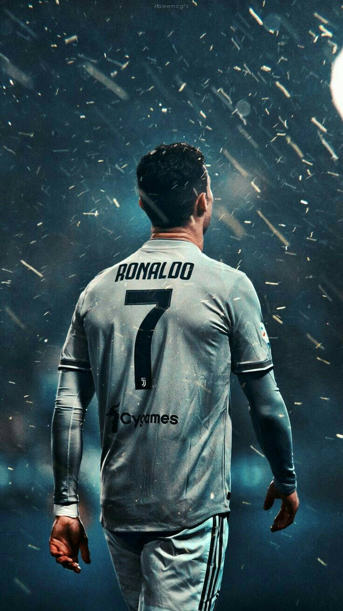
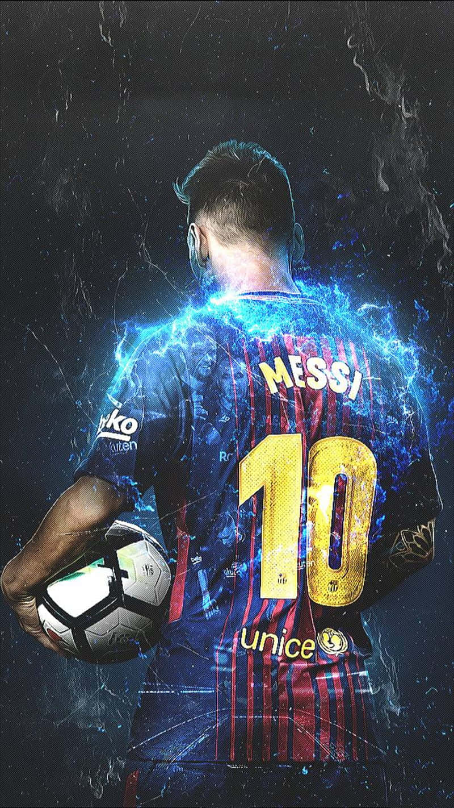
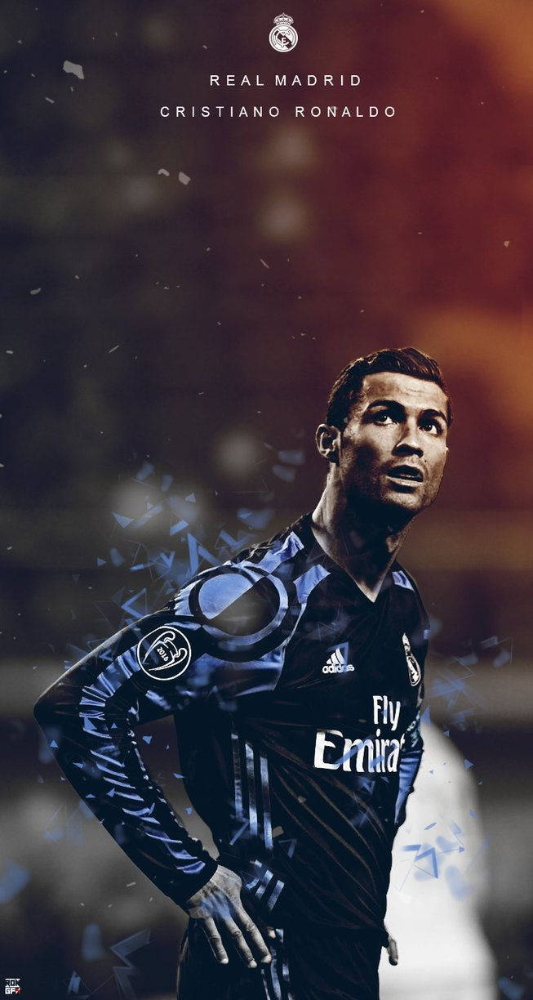
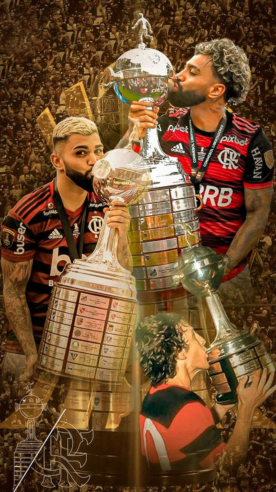

@mtrmayczin10

Cristiano Ronaldo(Juventus)
Uma foto que deu um trabalho por conta da iluminação e dos detalhes da chuva.

Lionel Messi(Barcelona)
A questão dos destalhes de fumaça azul, foi necessário análise de imagem, dedicação e paciência

Neymar Júnior(PSG)
Uma foto mais simples, preto e branco, uma vibe mais marcante.

Cristiano Ronaldo(Real Madrid)
Nesta imagem, tive que arriscar alguns efeitos para ter algo de diferencial nela.

Gabriel Barbosa(Gabigol)
Momentos vitóriosos e conquistas, testei alguns efeitos que combinavam e o resultado foi esse.

Neymar Júnior
Nesta imagem o Neymar está pensativo, por conta de sua fase no clube.